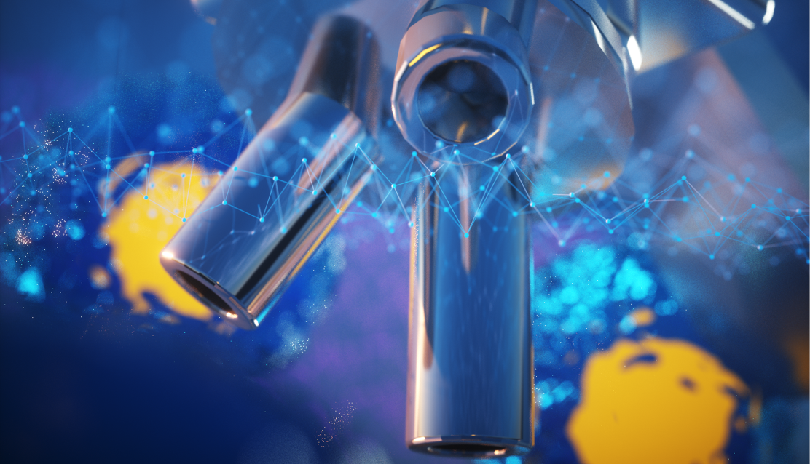

Research

In this work we demonstrate the principle of "Learned Sensing" applied to fluorescence microscopy. We jointly optimized the illumination of a sample with a deep neural network to predict fluourescent images from unlabeled samples. Our results demonstrate that by adding a cheap LED array to a conventional transmission microscope you can greatly improve performance on virtual fluorescence tasks, and likely In Silico labelling tasks more broadly.
Publication:
Cooke, Colin L., et al. "Physics-enhanced machine learning for virtual fluorescence microscopy." arXiv preprint:arXiv:2004.04306 (2020).
Here we demonstrate a new take on Learned Sensing by allowing the illumination of the sample to be governed by the sample. Looking at both simulated and experimental tasks we created a deep learning system that iteratively displayed different LED patterns on the sample, and integrated the coresponding images using an LSTM to make a classification.
Publication:
Chaware, Amey*, Cooke, Colin L.*, et al. "Towards an intelligent microscope: adaptively learned illumination for optimal sample classification." IEEE International Conference on Acoustics, Speech and Signal Processing (ICASSP). IEEE, 2020.
Movement Signal Processing
Worked with Professor Arash Arami at the University of Waterloo to link concepts within reinforcement learning and neuromechanics. Developed new techniques for policy exploration which are inspired by the Muscle Synergy Hypothesis.
Working with professor K. Andrea Scott at the University of Waterloo I developed deep learning training strategies to predict the sea ice concentration of Synaptive Aperature Radar images.
We guided the training of CNNs by utilizing staged learning. We injected noise into the base image during training and gradually reduced it over several epochs.
This led to the CNN learning feature based patterns prior to texture based and stopped the CNN from being stuck in a conceptual minima.
Publication:
Cooke, Colin LV, and K. Andrea Scott. "Estimating sea ice concentration from sar: Training convolutional neural networks with passive microwave data." IEEE Transactions on Geoscience and Remote Sensing 57.7 (2019): 4735-4747.
Augmented Solar Analysis
While working for Heliolytincs Inc. I integrated the results of Aerial Image Segmentation into analysis workflows.
I utilized known spatial information of the solar panels as well as adaptive pattern recognition to combine information
from multiple aerial viewpoints and empowered analysts to focus on identification rather than localization.
Large Scale Neural-Simulations
Working with the Center for Theoretical Neuroscience at the University of Waterloo I experimented with possible optimization methods for biologically plausible nerual simulations.
I built networks which learned how to acheive tasks ranging from simple multiplication to compression of images. In addition I led an investigation
into optimizing very large models that could acheive complex tasks (like associative memory) by optimizing the sub-networks within them.
Segmentation of Aerial Imagery
While working for Heliolytics Inc. I pioneered the development of deep learning convolutional neural networks to segment aerial imagery.
The models developed automate the analysis of solar panels allowing analysts to work faster and focus on edge cases rather than easily analyzed panels.
Work

My full resume can be found here. or linkedin if you prefer.
AI Research Intern - Kindred AI
- Led design and experimentation of reinforcement learning on robotic applications
- Worked with multi-disciplinary team to develop robust reinforcement learning systems for use within robots at customer sites
- Collaborated with team members to develop and validate novel reinforcement learning algorithms and applications
- Participated in journal clubs, discussing and critiquing state of the art techniques in reinforcement learning algorithms and training techniques
Computer Vision and Machine Learning Research Intern - Heliolytics
- Led development of deep learning systems to segment aerial imagery
- Designed novel image-to-image mapping systems for unique environments that makes use of spatial
information and image content
- Implemented signal processing algorithms using SciPy to extract image features from aerial imagery
Hardware Systems Engineering Intern - Heliolytics
- Independently developed deep learning systems to segment aerial imagery and automate analysis of solar panels
- Reverse engineered proprietary data formats to access raw data from historical archives
- Implemented custom camera drivers for a high resolution infrared capture system, removing the need for proprietary software and associated costs
Integration Engineering Intern - Google/Nest Labs
- Load tested the real time system’s backend powering millions of devices by simulating the behavior of several distinct usage patterns and protocols with a combination of Scala, Gatling and Akka
- Developed tooling to analyze service logs in order to extract and visualize request information in an accessible and efficient way with Scala, The Play Framework, and Docker
- Centralized and simplified load test tooling to reduce setup and deploy time by containerizing the tools using Docker
- Lead a major overhaul of load testing tools to improve consistency and reflect production traffic
- Worked with team members to produce custom traffic distributions in order to stress test features and push the system past its limits
Mobile/Full-Stack Engineering Intern - Taplytics
- Implemented a SQLite database to reduce memory overhead by 80% when devices are offline
- Optimized SDK, resulting in speed increases of up to 150% for select features
- Implemented location and event-based push notifications using the Google Play Services location API (Android) and Core Location API (iOS)
- Developed feature to allow visual changes to arbitrary elements contained within ListViews or RecyclerViews after an app has been released
- Provided support and solved technical issues in real time for clients such as Tinder and Target
About

A Mechatronics Enginering Student by education but an AI developer by trade.
I was drawn to robotics by its ability to augment or replace the physical abilities of humans.
The concept of making people better at what they do or even replacing them entirely has always driven me to learn the inner workings of machines and processes.
What robotics does for a person's body, AI does for their mind. The ability to identify trends, make predictions, and learn is what seperates artifial intellegence from every piece of technology that has come before. At the same time however, AI is limited.
- AI is inefficient. Humans underestimate our ability to be mediocre at things. We are fantastic at learning to do "fine" extremelly quickly. Humans learn on the order of tens of examples, where AI learns from tens of thousands.
- AI is brittle. Trials outside the training set can often break systems. Deep neural networks in particular are often vulnerable to over-fitting, as well as adversial approaches.
- AI is opaque. It is often difficult to understand the decisions a deep neural network makes, or the trends it learns. We may not even realize that the system we have created is burdened by its own complexity.
AI's limitations are exciting. Each one of them presents an opportunity to advance the field, to make machines smarter.
Contact
Email: clvcooke@gmail.com
Scholar: Colin Cooke
Twitter: @clvcooke
Awards

- NSERC Doctoral Fellowship
- Norman Esch Entrepreneurship Award for Capstone Design
- Social Awareness Award - Ontario Engineering Competition
- Innovative Design, 1st Place - Ontario Engineering Competition
- Innovative Design, 1st Place - Waterloo Engineering Competition
- Baylis Medical Capstone Design Award
- Quantum Valley Problem Pitch Competition
- Technical Speaking Competition 1st Place - Waterloo Enginering Competition
- President's Research Award - University of Waterloo
- Top 10 - Linkedin Hackathon 2016
- Junior Design Competition 1st Place - Canadian Engineering Competition
- Junior Design Competition 1st Place - Ontario Engineering Competition
- Junior Design Competition 1st Place - Waterloo Enginering Competition
- President's International Experience Award - University of Waterloo
- Queens Startup Summit 1st Place - Queens University
- President's Scholarship of Distinction - University of Waterloo